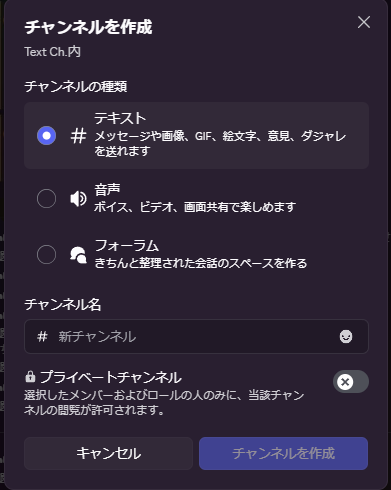
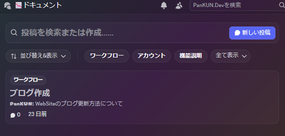
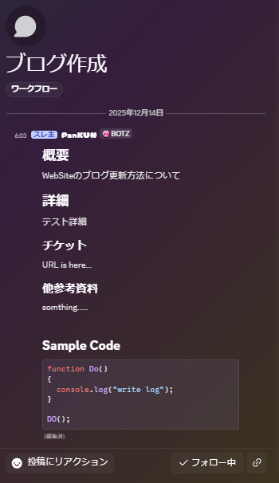

Discordサーバーの運用設計について
コミュニケーションの性質（流動情報・固定情報・継続タスクなど）ごとに最適なチャンネル種類やフォーラム活用法、カテゴリ設計、ルール策定と運用の考え方を実例とともに丁寧に解説します。コミュニティ／チームどちらの用途にも応用できる実践的な設計指針です。
こんにちは！パン君です。
今回は Discord のチャットやカテゴリ分け、トークの性質面等に注目して理想的なサーバー構造を誰でも構築できる考え方について話していきたいと思います。
コミュニティーサーバー、フレンドサーバー関係なく使える内容になっていますので是非ご活用ください。
前置き
これはあくまでサーバー運営側の推奨する利用方法を明示することによって チャンネルの清潔さ や 利用者側の利便性 が向上するという話なので、必ずこうした方がいいという話ではありません。
各々の組織やコミュニティ、その中の人や目的によって最適解が変わる話ですので根本を理解して運用するのが吉です。
はじめに
この話をするにあたってチャンネルの種類について先に振り返ります。
| チャンネルの種類 | 説明 |
|---|---|
| テキスト | メッセージや画像等を送れます |
| 音声 | ボイスやビデオ、画面共有ができます |
| フォーラム | きちんと整理された会話のスペースを作る |

以上のチャンネルが作成可能です。
そして Discord には機能として
- ロール
- チャンネルのカテゴリ分け
- サーバーブースト
- スレッド(実はフォーラムは内部的にはスレッドと同等な機能だとか)
- 通知設定
- Webhook
- Bot
- イベント
- コミュニティー化
- 連携アプリケーション
などなど、実に多くの機能を持っており大変便利ですが一言で Discord がなにかと表すとただの チャットツール です。
他のコミュニケーションツールと比較する場合 UI/UX や 機能 の差でどれを使うのが一番便利か、情報が視覚的に見やすいかの差でしかありません。
(この差が大いに大変で考えられているものではあるので、 「しか」という表現は失礼かも...)
コミュニケーションの性質について
ここからは少し抽象的な話になってきますので、皆さんが日頃行っている 「仕事」 という括りでフォーカスして話ていこうと思います。
人とやり取りをして、連携、教育、連絡、相談などなどを行い様々な 性質 を持った言葉でやり取りを行うと思います。
これを単語として区分できるように下記のような見方を行い 性質 にあったチャンネルの構築とルールを定義します。
| 性質 | チャンネルの種類 | 例 |
|---|---|---|
| 流動情報 | テキストチャンネル | 自己紹介、雑談、勤怠、相談 |
| 固定情報 | フォーラム、ピン留め | フロー、ルール |
| 継続タスク・案件管理 | フォーラム、イベント機能 | プロジェクト毎にフォーラム(スレッド)を作成 -> 期限はイベントで管理 |
| 知識・議事の共有 | フォーラム | スレッドをドキュメントのように利用してスレッド毎に項目を分ける |
以上ですが、改めて補足です。
各々の組織やコミュニティ、その中の人や目的によって最適解が変わる話ですので根本を理解しましょう。
３つめ と ４つめ に関しては 「仕事」 という括りで話しているために出てきているワードですが友達との交流でこれはいらないみたいなケースもあり得ますので
最適解は変化します。
しかし 「性質毎にどのように管理する必要があるか」 という所について考えるということについてはどの組織においても考えるメリットがあります。
例
自作の開発用Discordサーバーの例です。
- 運営--------------- (カテゴリ)
- サーバーガイド (Text ch)
- Text ch------------ (カテゴリ)
- エントランス (Text ch)
- コミュニケーション (Text ch)
- qa (Text ch)
- 連絡 (Text ch)
- 開発部屋 (Text ch)
- 開発用---------- (カテゴリ)
- ドキュメント (Forum ch)
- 仕様 (Forum ch)
- 資料倉庫 (Forum ch)
- qa (Forum ch)
- 議事録 (Forum ch)
- 通知 ch---------------- (カテゴリ)
- github (Text ch)
- bot (Text ch)上記がチャンネルとして用意したものです。
他については githubからの通知チャンネルがある通りです。
ルールを定義=自由を奪う
コミュニケーション用のツールに特殊な使用方法を行うのを試みる事は 選択肢を増やすという観点から素晴らしいことです。
しかし、従来の使用方法とは違った使い方をするということは 文化からはみ出た特殊な事なので 大なり小なりルールが生まれます。
それは作成者側からしたら大差ないことかもしれませんが、利用者側からしたら大きな違和感になることも多いです。
つまり見出しの通り ルールを定義=自由を奪う 事にもなりえるわけです。
この辺りで必要になってくる知見が discord bot や 外部ツール の知見、連携アプリケーション、などなどです。
うまく構築して誘導、サーバー内の導線が感覚で理解できるような構造であれば、自由を奪われてると思わないようになると思います。
なので、Discord標準機能のみで完結することに拘らないようにしましょう。
フォーム機能について
フォームチャンネルは下記のような画面になってます。

そしてよくあるドキュメントツールに必要な最低機能である下記の機能があります。
- 検索
- タグフィルター
- ソート
ついでに下記もあります。
- フォロー
- アーカイブ
- リアクション
という感じです。
そしてこれを Discordが実装している大体のマークダウン記法で資料をスレッド単位で作成すると下記のような感じになります。

あとは各々の組織の書き方次第です。
この中身すらも統一したいのであれば、テンプレートなり規約なりの項目を最適なチャンネルにて記述すればよろしいです。
コミュニケーションの性質毎の寿命について
寿命について語る前に少し前置きです。
性質毎といいつつも、内容、タイミング等によって明確に出せる内容ではありませんが組織的には文化的な傾向はあるはずです。
無いのであればそれは無法地帯と違いないので、ルールを試しに定めてみるのもいいかもしれません。
そこから良し悪しが判明して、運用方法が見えてきます。
しかし、そういったトライアンドエラーが出来ない環境でという話になる場合、その組織はなんかしらの切っ掛け(外部的要因も含め)を原因に破滅すると思われます。
ただ、その組織自体の寿命が 短期的で良い などの状態なのであれば、速度重視でルール化を行わない等、対応方法自体に正解はありません。
ありませんが、最適解を模索することは良いことですし経験にもなるので、やって損はありません。 要はケースバイケースです。
前置きは終了で、寿命についてです。
例えば 日報 というチャンネルがあったとします。
要件は下記のようなカジュアルな物だったとしてそこで発生するメッセージの寿命はどれくらいでしょうか。
毎日食べたものを連絡してコミュニケーションを図りましょう
これも上述で何度も話している通り、 各々の組織やコミュニティ、その中の人や目的によって最適解が変わる話 ですので、もちろん明確な期間の定義はありません。
例えば この間バーで〇〇〇を×××君と一緒に飲んでめっちゃ盛り上がりました と日報があったとします。
この流れで他の人が何かリプライ的に反応することもあり得ますよね？
もしこの日報チャンネルの主要目的が 生存確認 のみなのであればこれは完全に流動的なものです。
コミュニケーションの中身自体はこの先保持され続ける必要はありません。
しかし、健康管理等で年間なにをしたのか記録する必要があって行っている 場合
これの寿命はその年間記録の節目になります。
もしくは、数か月間は利用する可能性や必要がある場合は、平均寿命が数か月単位なのが確定します。
しかし、具体的なのは確定していない状況になります。
つまり状況によって 流動的 だったり 固定的 だったり 継続タスク だったりするわけです。
そしてそれにあったチャンネル構造を取ればいいという話でした。
まとめ
初めてブログで抽象的な話を描いたので見やすい記事になっているか疑問が残りますが
コミュニケーションの性質から見る Discord のチャンネル運用の考え方についてでした。
こういうのはプロジェクトマネージャーとかが考える内容に近い気がしていて、自分はまだ疎い方だと思う上に
コミュニティーサーバーを作る等を行う際とか、チームのビルドアップを行ったりする際に必要になってくるので、
積極的に書籍購入や講義、観察等をすると経験となり、行動をして、実績に昇華すると思います。
単語でいったら 「アジャイル開発」とか「スクラム」「カンバン」 とかその辺を調べたら方向性が更に掴めてくるかもです。
ちなみに僕はまだなんとなしに気にしている程度ですし、一般コミュニケーションでも起こりうるということに気づいたので応用しただけなのでなんともですが、
調べてみたら 「Discord サーバー 活用術」 とか色んな書籍が既に出ていたので、そういうのを見るのも手ではあるかもです。
※Discordのバージョン違いで書いてあることと辻褄が合わない等はあるかもですが
以上 Discordサーバーの運用設計について でした！